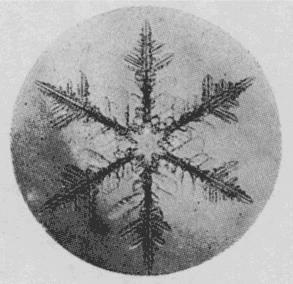
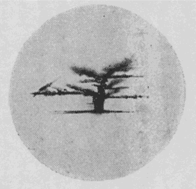

初めは慰み半分に手をつけて見た雪の研究も、段々と深入りして、
算えて見ればもう
十勝岳へは五回も出かけて行ったことになる。
落付く場所は道庁のヒュッテ
白銀荘という小屋で、
泥流コースの近く、
吹上温泉からは五
丁と
距たっていない所である。
此処は丁度十勝岳の中腹、森林地帯をそろそろ抜けようとするあたりであって、標高にして千六十
米位はある所である。
雪の研究といっても、今までは主として顕微鏡写真を撮ることが仕事であって、そのためには、顕微鏡は
勿論のこと、その写真装置から、現像用具一式、簡単な気象観測装置、それに携帯用の暗室などかなりの荷物を運ぶ必要があった。その
外に一行の食料品からお八つの準備まで大体一回の滞在期間約十日分を持って行かねばならぬので、その方の準備もまた相当な騒ぎである。全部で百貫位のこれらの荷物を三、四台の
馬橇にのせて五時間の雪道を揺られながら、白銀荘へ着くのはいつも日がとっぷり暮れてしまってからである。この雪の行程が一番の難関で、小屋へ着いてさえしまえば、もうすっかり
馴染になっている番人のＯ老人夫妻がすっかり心得ていて何かと世話を焼いてくれるので、急に田舎の親類の家へでも着いたような気になるのである。
この白銀荘は山小屋といっても、実は山林監視人であるＯ老人の家であって、普通には開放していないので、内部は仲々立派に出来ている。階下が食堂兼居室で、普通の山小屋の体裁に
真中に大きい
薪ストーヴがあって、二階が寝室になっている。この小屋の附近は不思議と風当りが少いので、下のストーヴの暖みに気を許して、寝室の毛布にくるまっていると、自分たちにはこの小屋の二階が
何処よりも安らかな眠りの場所である。着いた翌日は
先ず階下の部屋の一隅に
蓆を敷いて
隙間風を防ぎ、その上に携帯用暗幕を張って急造の暗室を作る。その中に器械を入れて来た木箱を適当に配置して現像装置だの、
乾板の出し入れの用意などをととのえる。それから食卓を一つ借り切って、これはそのまま実験台とする。雪の結晶の撮影は小屋の入口の
白樺造りのヴェランダで行うことにして、此処にも木箱を持ち出して実験台を作る。顕微鏡写真の撮影にはかなり丈夫なちゃんとした実験台が
要るのであるが、それには前にも書いたように雪のコンクリートという極めて重宝なものがある。木箱の周囲を雪で固めて、ばけつに一杯の水を流しかけると、五分も
経たぬ
中にすっかり凍りついてしまって、立派なコンクリートの実験台が出来る。顕微鏡写真装置も同様にしてこの実験台の上にくっつけてしまうのである。
十勝岳のこの附近は、雪の結晶の研究には先ず申分のない所であろう。あるいは世界でも珍らしい所ではないかという気もする。第一結晶が極めて美しく、繊細を極めたその枝の端々までが手の切れそうな鮮明な
輪廓を持っていることである。自分たちが白銀荘で見たような美しい結晶は世界中のどの観測者の写真にも見られないものであった。それから結晶の種類がまた極めて多い。普通に雪の結晶の代表と思われている
六花状のあらゆる種類の結晶は勿論のこと、余り知られていないところの樹枝状の結晶の枝が立体的に伸びているもの、それから
稀らしいとされている
角錐状の結晶、
鼓型の結晶、それが数段になっている段々鼓型などの結晶が惜し
気もなく降って来るのである。この二月には針状の結晶がそればかり三十分も続いてかなり激しい降雪となって降って来たこともあった。それから全く世界中の今までの文献に知られていないと思われる側面結晶という不思議な雪も数回観測することが出来た。

平面樹枝状の結晶 ×13.5

段々鼓の側面
今一つこの十勝岳の観測地点は気温も全く申分ない条件をそなえているのである。冬の真中で大体最低零下十五度最高零下十度位の所を毎日規則正しく変化しているのであって、気温の変化が非常に少いために、観測者の
身体が
直ぐそれに
馴れてしまって仕事が非常に楽なことである。普通に考えて零下十度というと、全く細かい研究などの出来ない寒さと思われるのであるが、此処での体験によるとこれ位の寒さが雪の研究には丁度良い気温であることが分ったのである。自分たちは別に寒さに対して特に強いとは思われないにもかかわらず、不思議とこの白銀荘で四、五日仕事を続けていると、戸外に朝から夜の十二時近くまで立って仕事をしていても別に大した寒さを感じなくなるのである。勿論一時間置き位に室内へ入って、ストーヴで暖まっては出て行くのであるが、それにしても少し妙だと我ながら感心する。
生中煖房の設備などがないと身体の方が自然の方に適応して行くらしいのであるが、そのためには気温の変化が少いということが一つの有利な条件のように思われるのである。零下十度位になると、雪の結晶は全く安全で、どのように
弄っていても
融ける心配はないので、勝手に切ったり細工したりして調べることが出来る。一つの結晶を色々に引っ張ってこわして見るという簡単な操作だけで、昨年の冬は二
核から成る結晶の存在が確められて、従来多年の懸案となっていた三花や四花の結晶の成因がすらすらと解決出来てしまったのであるが、これもよく考えてみると、普通の地点では一番困難な実験であったのかも知れない。
雪はさすがに実によく降る。冬中
何時行って見ても、大抵毎日少しも降らないという日は滅多にない。朝起きると一面の青空で、朝日が白銀の世界を
茜色に染めているような日でも、夕方になると大抵は美事な樹枝状の結晶が
細雨のように音もなく降って来る。このような時は大抵写真を撮るには最適の条件のことが多く、つい遅くまでもひきずられがちとなるのである。
朝目を覚まして青空が見えるような日には、一同大変な元気で早くから起き出してしまう。そして急にパンを切ったり、スキーに
蝋を塗ったりして山登りの準備にかかる。何時の
間にか、天気がよくて雪の降らぬ日は
ふりこ沢のあたりまでスキーに乗って、積雪上の波型を見に出かけるということに
決ってしまったのである。そして特に晴れた日にはそのまま十勝の頂上まで行程を伸ばしてしまうのである。それを楽しみにして特に助手を志願して出る学生も出て来て、大抵いつも十勝
行に人手が足らなくて困るということはない。
Ｏ老人もよく一緒に行くことが多い。かんじきを
穿かしたら誰もこの老人に
敵うものはないが、スキーはまだ始めて二年にしかならぬというので、丁度良い同行者なのである。この老人は全く一生を雪の山の中で暮して来たという実に不思議な経歴の人である。この人の話などを聞いていると、雪の山で遭難をするというようなことはあり得ないという気がするのである。一昨年の冬にも犬の皮一枚と猟銃と塩
一升だけを身につけて、十二月から翌年の二月一杯にかけて、この十勝の連峯から
日高山脈にかけた
雪嶺の中を一人で歩き
廻って来たというのである。この老人の話をきくと零下二十度の雪の中で二カ月も寝ることが何でもないことのようなのである。もっともその詳しい話を聞き出して見て驚いたのであるが、この老人はわれわれのちょっと及ばぬような練達の科学者なのである。
雪の中で寝るのに一番大切なことは
焚火をすることであるそうである。それは極めてもっともな話であるが、厳冬の雪の山で焚火をするのは決して容易な
業ではない。ところがこの老人は三段のスロープの
蔭に自分たちを連れて行って、何の
雑作もなく雪の上で大きい焚火をしてわれわれを暖めて見せてくれたのであった。風の当らぬ所を選んでこれだけの焚火があったら、なるほど雪の中で寝ることも事実普通の生理学と少しも矛盾しないのである。
鋸と
手斧とマッチが食料品と同様に雪の山では必需品であることを実例で教えてくれたのはこの老人であった。
感心したことは、この老人は出来るだけ文明の利器を利用しようとつとめることであった。魔法瓶だの気圧計だのというものには特別の興味を持ち、かつそれを利用したがるのである。とうとうその思いが一部叶って魔法瓶を買うことの出来た時の無邪気な喜びようには誰もが心を
惹かれた。気象の見方、保温の方法、器具の取扱い法、食料としての
兎の
猟り方から山草の料理法など、すべての事柄について、
隅の隅まで行き届いた細かい注意が払われていることが、聞き出すごとに分って来た。このように自分一人の体験で作り上げた科学の体系を持っていて初めて山の生活が安全に遂行されるのであろう。
今年も
初霰のたばしる音を聞くと、十勝の生活とこの老人のことが思い出される。結晶の研究にもまだ抜けた所が沢山ある。特に粉雪の結晶構造の研究にはまだ一冬はどうしてもかかる。その
外にも昨年の冬から初めて手を付けて見たスキー滑走の物理学の完成にも十勝は最も良い聖場の一つである。まだまだ数年は冬ごとに十勝へ通わねばなるまい。クリスマスの木のようなあの十勝の
樹たちに会うことも、この老人からストーヴの
周りで「カムチャツカへ歩いて行った話」を聞くことも皆楽しみの種である。
（昭和十年十二月一日）